كِتَابِي الْأَوَّل
الْحُرُوف

مَكْتَبَتِي الْأُولَى
01-letters · page 1 · front cover
هَذَا الْكِتَابُ لِـ:
01-letters · page 2 · inside front cover
أ
أَلِف
أَرْنَب
01-letters · page 3 · item 01
ب
بَاء
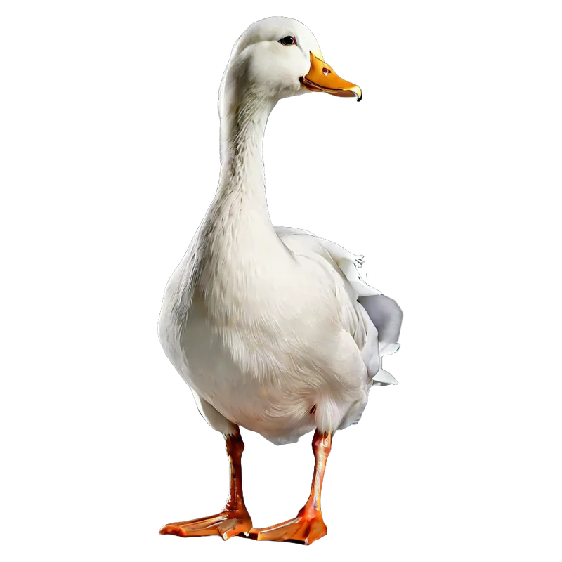
بَطَّة
01-letters · page 4 · item 02
ت
تَاء
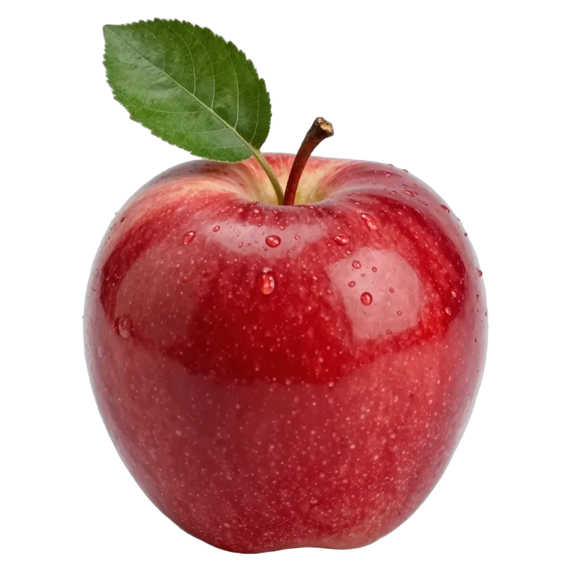
تُفَّاحَة
01-letters · page 5 · item 03
ث
ثَاء
ثَعْلَب
01-letters · page 6 · item 04
ج
جِيم
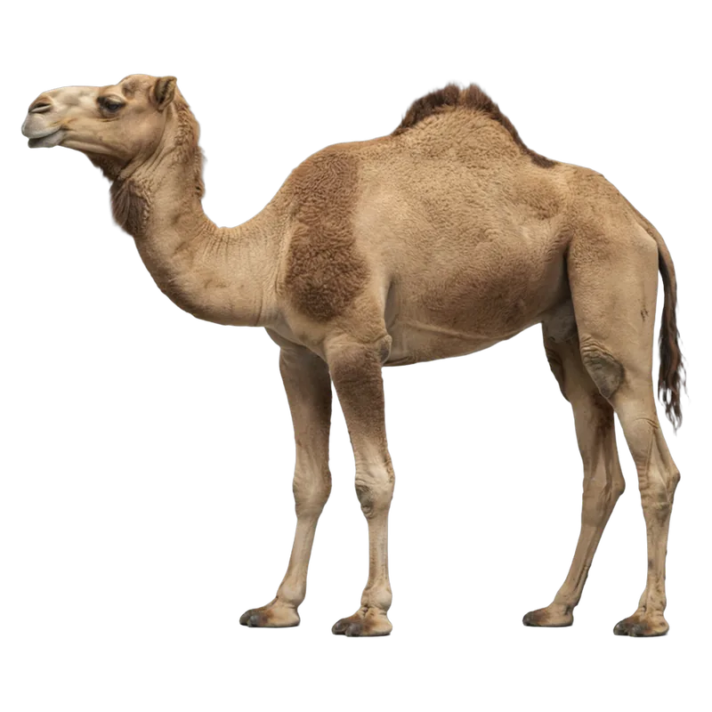
جَمَل
01-letters · page 7 · item 05
ح
حَاء
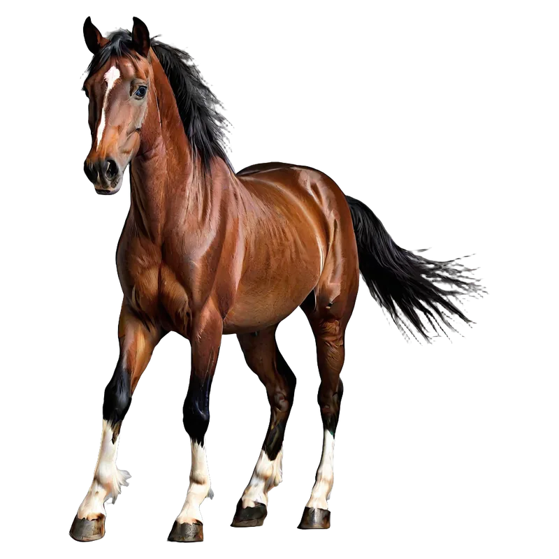
حِصَان
01-letters · page 8 · item 06
خ
خَاء

خَرُوف
01-letters · page 9 · item 07
د
دَال

دُبّ
01-letters · page 10 · item 08
ذ
ذَال
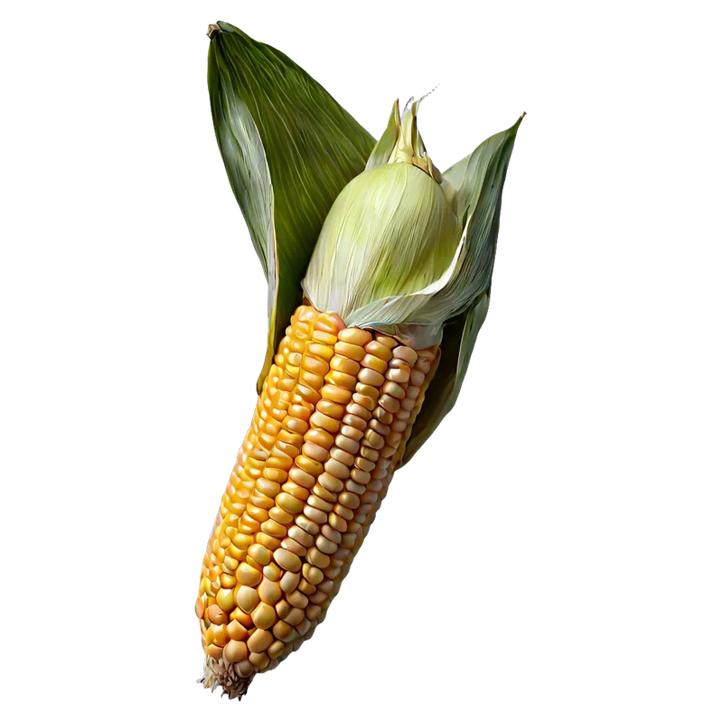
ذُرَة
01-letters · page 11 · item 09
ر
رَاء
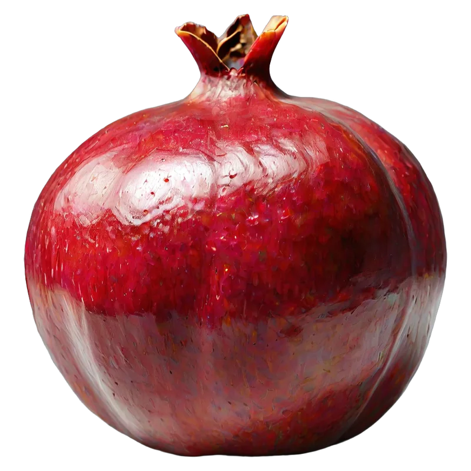
رُمَّانَة
01-letters · page 12 · item 10
ز
زَاي
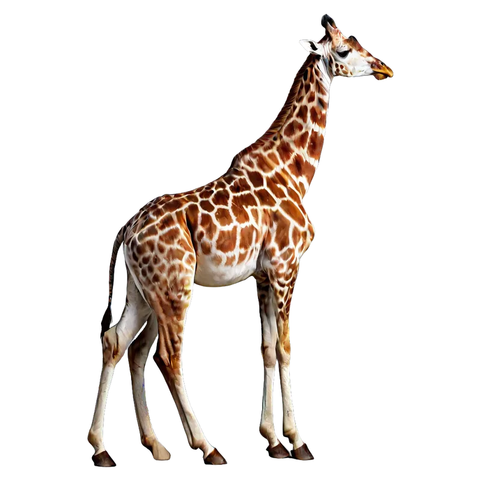
زَرَافَة
01-letters · page 13 · item 11
س
سِين
سَمَكَة
01-letters · page 14 · item 12
ش
شِين
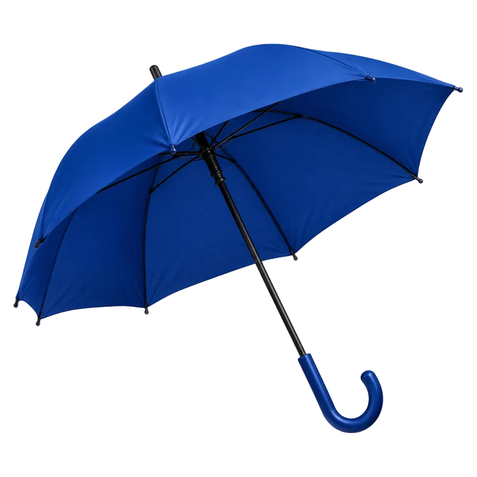
شَمْسِيَّة
01-letters · page 15 · item 13
ص
صَاد
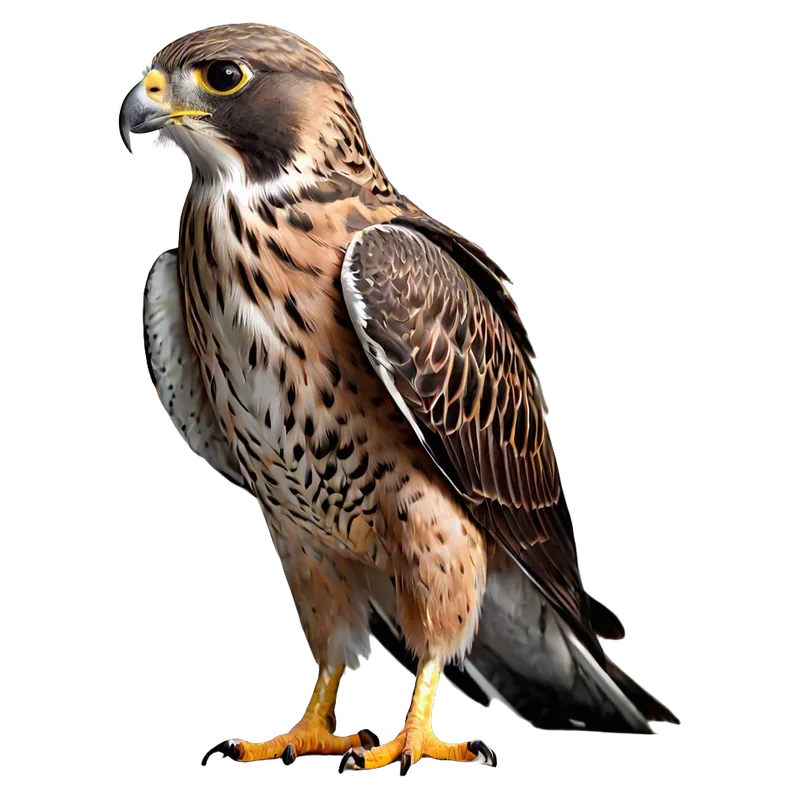
صَقْر
01-letters · page 16 · item 14
ض
ضَاد
ضِفْدَع
01-letters · page 17 · item 15
ط
طَاء
طَائِرَة
01-letters · page 18 · item 16
ظ
ظَاء
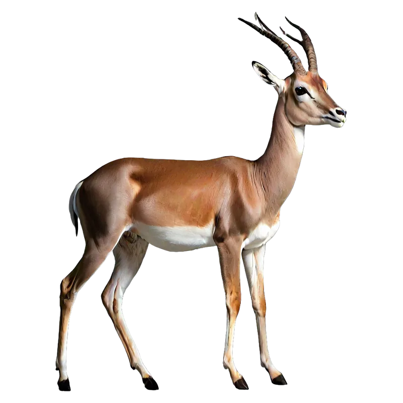
ظَبْي
01-letters · page 19 · item 17
ع
عَيْن
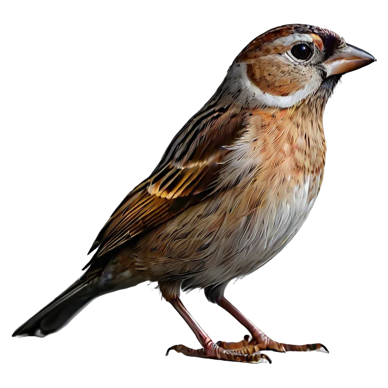
عُصْفُور
01-letters · page 20 · item 18
غ
غَيْن
غَيْمَة
01-letters · page 21 · item 19
ف
فَاء
فِيل
01-letters · page 22 · item 20
ق
قَاف
قِطَّة
01-letters · page 23 · item 21
ك
كَاف
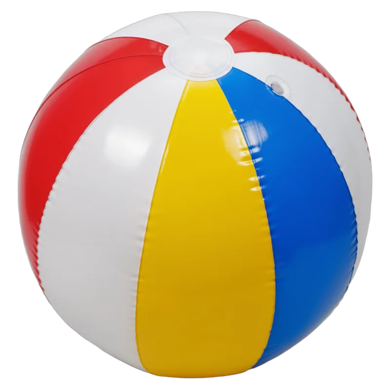
كُرَة
01-letters · page 24 · item 22
ل
لَام
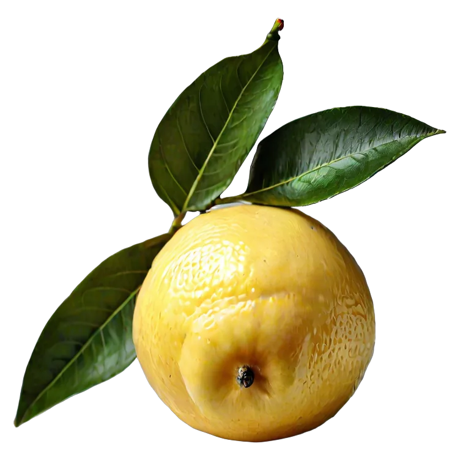
لَيْمُونَة
01-letters · page 25 · item 23
م
مِيم
مَوْزَة
01-letters · page 26 · item 24
ن
نُون
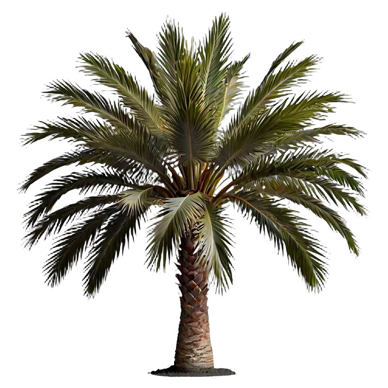
نَخْلَة
01-letters · page 27 · item 25
ه
هَاء
هَدِيَّة
01-letters · page 28 · item 26
و
وَاو
وَرْدَة
01-letters · page 29 · item 27
ي
يَاء
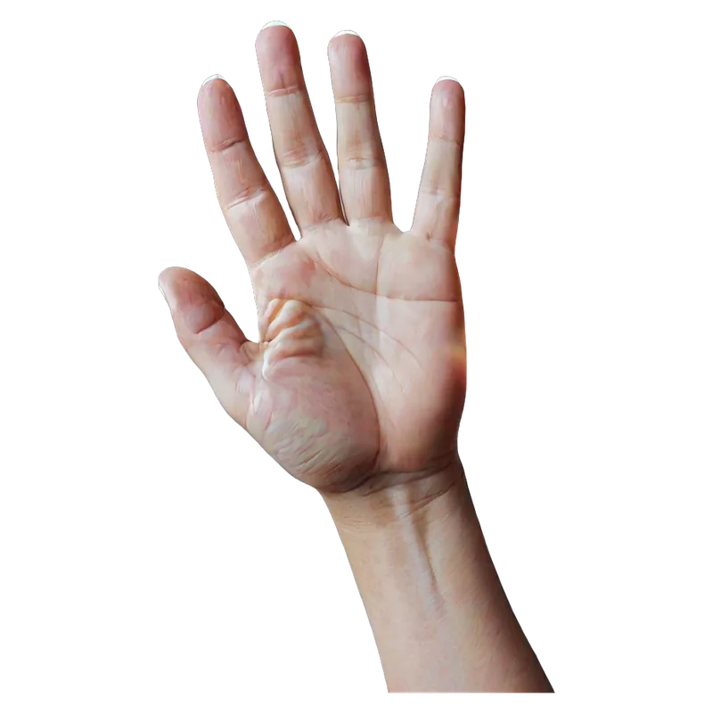
يَد
01-letters · page 30 · item 28
حُرُوفِي
أ
ب
ت
ث
ج
ح
خ
د
ذ
ر
ز
س
ش
ص
ض
ط
ظ
ع
غ
ف
ق
ك
ل
م
ن
ه
و
ي
01-letters · page 31 · recap
أَيْنَ الْفِيلُ؟
01-letters · page 32 · question
مَكْتَبَتِي الْأُولَى
الْحُرُوف
الْأَرْقَام
الْأَشْكَال
الْأَلْوَان
الْحَيَوَانَاتُ الْبَرِّيَّة
حَيَوَانَاتُ الْمَزْرَعَةِ وَالْبَيْت
الطُّيُور
الْفَوَاكِه
الْخُضْرَوَات
الْمُوَاصَلَات
01-letters · page 33 · inside back cover
مَكْتَبَتِي الْأُولَى
يتعرّف طفلك على الحروف العربية الثمانية والعشرين، ولكل حرف كلمة وصورة حقيقية.
من عمر سنة إلى ٣ سنوات
ISBN / BARCODEprinter places it here
01-letters · page 34 · back cover